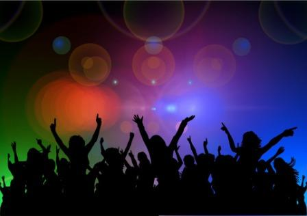

Music holiday programs.

The French Institute is not only contributing to the event with this concert, as it brings the French band Zenzile to the audience in the City Park.
The European Music Festival is a good opportunity for the audience to move from home to lesser-known musical styles and, on the other hand, provide an opportunity for different musical institutions (opera, orchestras, choirs, etc.) to break free from the four walls and show off there in the open air.
In France, in addition to the music profession, many people take their instruments and play music on the streets to their liking.
The Music Festival is a full-day, free, non-political event that covers all forms and styles of music.
More than one hundred and thirty bands will give concerts at the music festival.
Launched as a civic initiative in France in 1982, the main venue of the twenty-year-old event in Hungary this year is the Castle Garden Bazaar, the professional partner of the organizers is the Tamás Cseh Program.
About fifty of the performers will be seen and heard in the Castle Garden Bazaar.
There will be two large stages in the Castle Garden Bazaar, one in the courtyard of the Foundry House and the other in the Dry Trenches, and smaller venues will showcase the joy of street music.
In addition to light music, classical music and jazz are also on offer at this year's music festival in Hungary.
Thirteen rural venues have joined Budapest, and the events are free everywhere.
The concerts last from 1 pm to 9 pm, for jazz fans, for example, the Silence Fiction show is a treat, and for the lovers of classical music, the chamber concert of the Pannon Philharmonic Orchestra in Pécs.
Several of the performers who received support for the first audio and video recording under the NKA Tamás Cseh Program will perform, including Margaret Island, Pace Palmers.
The venue in Budapest is the A38 boat, the Cselekvés Alkotás Community or the Corvin Department Store, and there will be free concerts in the countryside in Eger, Debrecen, Hajdúszoboszló, Csorna, Győr, Érd and Szarvas, mostly with local bands.
The celebration of music is traditionally a non-political movement, its mission is to celebrate music together in as many places as possible - with joint music, free concerts.
Budapest joined the French initiative in 1982 in 1995, and events are now held in more than a hundred countries to celebrate music, including outside Europe.